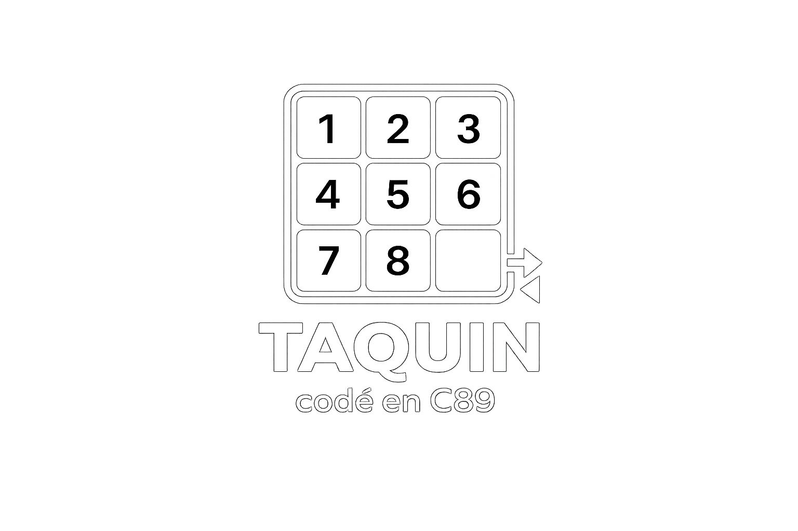
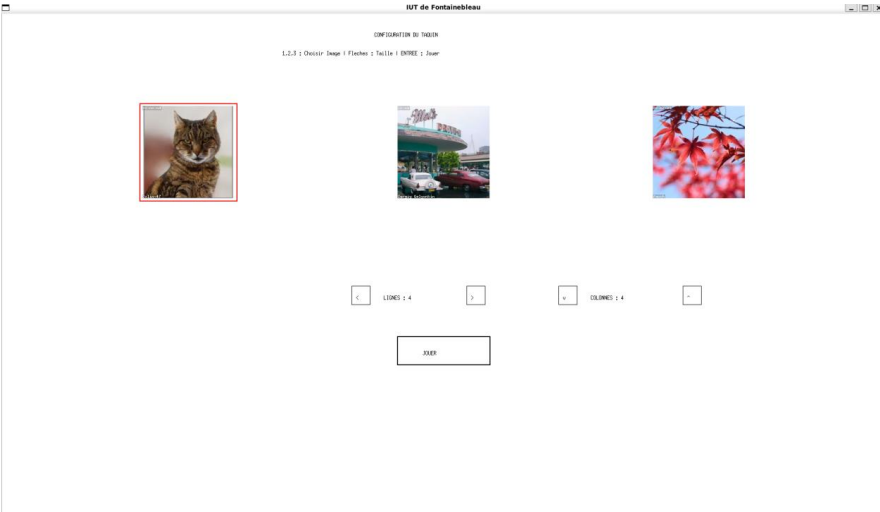
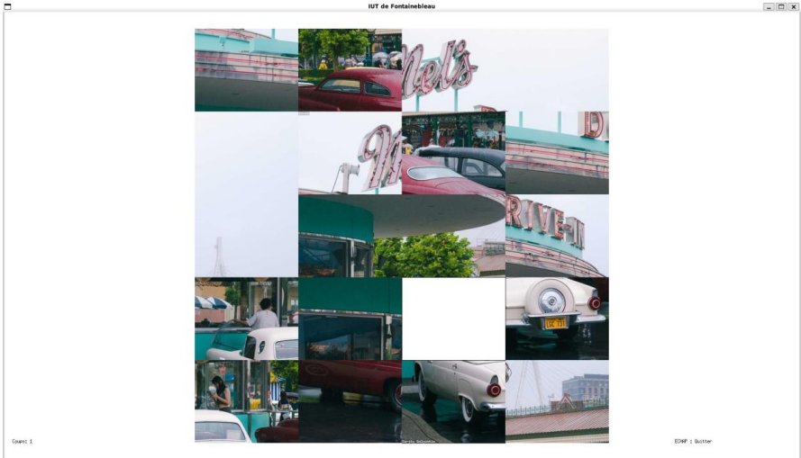

Taquin
BUT Informatique · Jeu en C89
Projet universitaire
Terminé
Jeu du taquin (puzzle) en C89. Projet réalisé dans le cadre du BUT informatique.
— fichiers
— lignes
Repo GitHub
Compétences utilisées
- Programmation C (C89)
- Algorithmique et logique de jeu
- Interface en ligne de commande
- Gestion des entrées utilisateur
Technologies
GitHub
— étoiles — forks Dernier commit: —Screenshots

